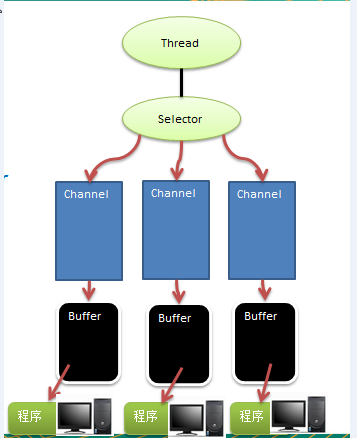

NIO笔记
BIO
输入流就是把数据（键盘输入、鼠标、扫描仪等等外设设备）读入到内存（程序）中，输出流就是把内存（程序）中的数据输出到外设或其他地方，从文件角度简单总结就是，输入流就是读数据，输出流就是写数据。在这个过程中，始终把内存作为参考点。
java NIO基本介绍
-
Java NIO 全称 java non-blocking IO，是指 JDK 提供的新 API。 从 JDK1.4 开始，Java 提供了一系列改进的输入/输出的新特性，被统称为 NIO(即 New IO)，是同步非阻塞的
-
NIO 有三大核心部分：Channel(通道)，Buffer(缓冲区), Selector(选择器)
-
NIO是 面向缓冲区 ，或者面向 块 编程的。数据读取到一个它稍后处理的缓冲区， 需要时可在缓冲区中前后移动，这就增加了处理过程中的灵活性，使用它可以提供非阻塞式的高伸缩性网络
NIO 和 BIO 的比较
- BIO 以流的方式处理数据,而 NIO 以块的方式处理数据,块 I/O 的效率比流 I/O 高很多
- BIO 是阻塞的，NIO 则是非阻塞的
- BIO基于字节流和字符流进行操作，而 NIO 基于 Channel(通道)和 Buffer(缓冲区)进行操作，数据总是从通道读取到缓冲区中，或者从缓冲区写入到通道中。Selector(选择器)用于监听多个通道的事件（比如：连接请求，数据到达等），因此使用单个线程就可以监听多个客户端通道
NIO 三大核心原理示意图

- 每个channel 都会对应一个Buffer
- Selector 对应一个线程， 一个线程对应多个channel(连接)
- 该图反应了有三个channel 注册到 该selector //程序
- 程序切换到哪个channel 是有事件决定的, Event 就是一个重要的概念
- Selector 会根据不同的事件，在各个通道上切换
- Buffer 就是一个内存块 ， 底层是有一个数组
- 数据的读取写入是通过Buffer, 这个和BIO , BIO 中要么是输入流，或者是 输出流, 不能双向，但是NIO的Buffer 是可以读也可以写, 需要 flip 方法切换
- channel 是双向的, 可以返回底层操作系统的情况, 比如Linux ， 底层的操作系统 通道就是双向的.
缓冲区(Buffer)
缓冲区本质上是一个可以读写数据的内存块，可以理解成是一个容器对象(含数组)，该对象提供了一组方法，可以更轻松地使用内存块， 缓冲区对象内置了一些机制，能够跟踪和记录缓冲区的状态变化情况。 Channel 提供从文件、网络读取数据的渠道，但是读取或写入的数据都必须经由 Buffer
| 属性 | 描述 |
|---|---|
| Capacity | 容量，即可以容纳的最大数据量；在缓冲区创建时被设定并且不能改变 |
| Limit | 表示缓冲区的当前终点，不能对缓冲区超过极限的位置进行读写操作。且极限是可以修改的 |
| Position | 位置，下一个要被读或写的元素的索引，每次读写缓冲区数据时都会改变改值，为下次读写作准备 |
| Mark | 标记 |
通道(Channel)
- NIO的通道类似于流，但有些区别如下：
- 通道可以同时进行读写，而流只能读或者只能写
- 通道可以实现异步读写数据
- 通道可以从缓冲读数据，也可以写数据到缓冲:
- BIO 中的 stream 是单向的，例如 FileInputStream 对象只能进行读取数据的操作，而 NIO 中的通道(Channel)是双向的，可以读操作，也可以写操作。
- 常用的 Channel 类有：FileChannel、DatagramChannel、ServerSocketChannel 和 SocketChannel。【ServerSocketChanne 类似 ServerSocket , SocketChannel 类似 Socket】
- FileChannel 用于文件的数据读写，DatagramChannel 用于 UDP 的数据读写，ServerSocketChannel 和 SocketChannel 用于 TCP 的数据读写。
FileChannel 类
- FileChannel主要用来对本地文件进行 IO 操作，常见的方法有
- public int read(ByteBuffer dst) ，从通道读取数据并放到缓冲区中
- public int write(ByteBuffer src) ，把缓冲区的数据写到通道中
- public long transferFrom(ReadableByteChannel src, long position, long count)，从目标通道中复制数据到当前通道
- public long transferTo(long position, long count, WritableByteChannel target)，把数据从当前通道复制给目标通道
利用nio拷贝文件
public static void main(String[] args) throws Exception {
FileInputStream fileInputStream = new FileInputStream("1.txt");
FileChannel fileChannel01 = fileInputStream.getChannel();
FileOutputStream fileOutputStream = new FileOutputStream("2.txt");
FileChannel fileChannel02 = fileOutputStream.getChannel();
ByteBuffer byteBuffer = ByteBuffer.allocate(512);
//循环读取
while (true) {
//这里有一个重要的操作，一定不要忘了
/*
public final Buffer clear() {
position = 0;
limit = capacity;
mark = -1;
return this;
}
*/
byteBuffer.clear(); //清空buffer
int read = fileChannel01.read(byteBuffer);
System.out.println("read =" + read);
//表示读完
if(read == -1) {
break;
}
//将buffer 中的数据写入到 fileChannel02 -- 2.txt
byteBuffer.flip();
fileChannel02.write(byteBuffer);
}
//关闭相关的流
fileInputStream.close();
fileOutputStream.close();
}
拷贝文件transferFrom 方法
public static void main(String[] args) throws Exception {
//创建相关流
FileInputStream fileInputStream = new FileInputStream("d:\\a.jpg");
FileOutputStream fileOutputStream = new FileOutputStream("d:\\a2.jpg");
//获取各个流对应的filechannel
FileChannel sourceCh = fileInputStream.getChannel();
FileChannel destCh = fileOutputStream.getChannel();
//使用transferForm完成拷贝
destCh.transferFrom(sourceCh,0,sourceCh.size());
//关闭相关通道和流
sourceCh.close();
destCh.close();
fileInputStream.close();
fileOutputStream.close();
}